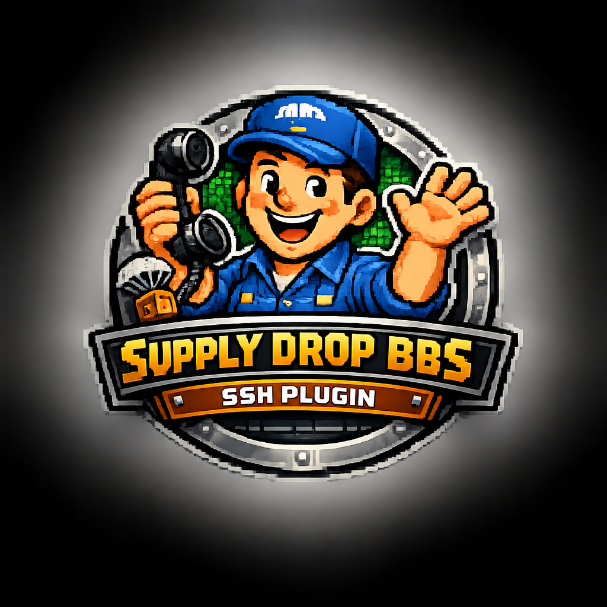

Supply Drop BBS process transport
Encrypted SSH access for Supply Drop BBS.
A standalone process transport plugin that lets any standard SSH client connect to your Supply Drop instance over an encrypted session. Install the package on the BBS host, let it register itself with Supply Drop, then connect on port 2222.
$ ssh -p 2222 bbs.example.net
Connected to Supply Drop BBS.
Welcome, ssh-bob.
Type 'H' for commands.
> N
Quickstart
Get a sysop online in a few minutes.
This is the shortest path from an existing Supply Drop instance to a working SSH listener on port 2222.
Read the full quickstart- Install the package on the computer that runs Supply Drop.
- Confirm SSH appears in
supply-drop-bbs plugin list. - Check that port
2222is listening. - Connect with PuTTY or
ssh -p 2222 <bbs-host>.
Install
Install the Debian package on Linux.
Choose the .deb that matches the computer running
Supply Drop. Raspberry Pi hosts usually use ARM64. Intel and AMD
Linux hosts use AMD64. The package installs the plugin, registers
it with Supply Drop, and restarts the BBS if it is already running.
curl -fsSL -o supply-drop-ssh.deb \
https://github.com/rneese1969/supply-drop-ssh-transport-plugin/releases/latest/download/supply-drop-ssh-transport-plugin_arm64.deb
sudo dpkg -i supply-drop-ssh.debcurl -fsSL -o supply-drop-ssh.deb \
https://github.com/rneese1969/supply-drop-ssh-transport-plugin/releases/latest/download/supply-drop-ssh-transport-plugin_amd64.deb
sudo dpkg -i supply-drop-ssh.deb- Requires Supply Drop BBS v0.6.0 or newer.
- Installs
/usr/bin/supply-drop-ssh. - Creates
/etc/supply-drop-bbs/plugins.d/ssh.toml. - Does not edit
config.toml.
Supply Drop v0.6.0+
Registration goes through plugins.d.
The Debian package calls Supply Drop's plugin CLI, which creates
/etc/supply-drop-bbs/plugins.d/ssh.toml. It never
edits config.toml. On startup, the plugin also reports
its version in the ready frame so the admin Plugins
table can display it.
supply-drop-bbs plugin add ssh /usr/bin/supply-drop-sshUpgrade-safe
The drop-in config survives BBS upgrades.
The plugin add command is safe to run on every upgrade. If SSH is already registered, Supply Drop prints that no changes were made and exits successfully.
/etc/supply-drop-bbs/plugins.d/ssh.toml
already configured — no changes madeOperator note
Encrypted, but still gate the port.
Sessions are encrypted, so the plaintext exposure of Telnet is gone.
The plugin accepts any SSH username, password, or key by design
because Supply Drop runs the real login, so anyone who reaches port
2222 reaches the BBS login prompt. The Linux package
uses the plugin default, 0.0.0.0:2222; use the drop-in
file for a local-only bind.
--bind 127.0.0.1:2222
--bind 0.0.0.0:2222
Host key
Publish your fingerprint once.
The plugin generates a persistent Ed25519 host key on first install
and reuses it after that, so returning users are not warned about a
changed key. Share the fingerprint so people can verify the BBS the
first time they connect. In PuTTY, leave the SSH radio button
selected and set the port to 2222.
ssh-keygen -lf /var/lib/supply-drop-ssh/host_key.pubTroubleshooting
Connection refused means no listener answered.
If the Pi rejects port 2222, check the listener on the Pi first. No listener means Supply Drop did not start the plugin, or the plugin exited during startup.
sudo ss -ltnp | grep ':2222'
sudo supply-drop-bbs plugin list
sudo journalctl -u supply-drop-bbs -n 100 --no-pagerDownloads
Packages are for the computer running Supply Drop.
Most Linux sysops should use the Debian package commands above. These direct downloads are for offline installs, manual inspection, or hosts where you already know the operating system and CPU type.